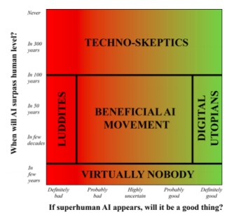
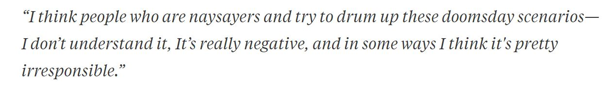
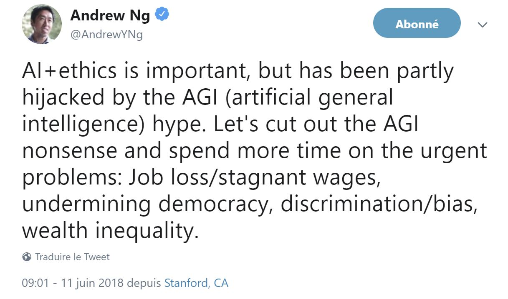
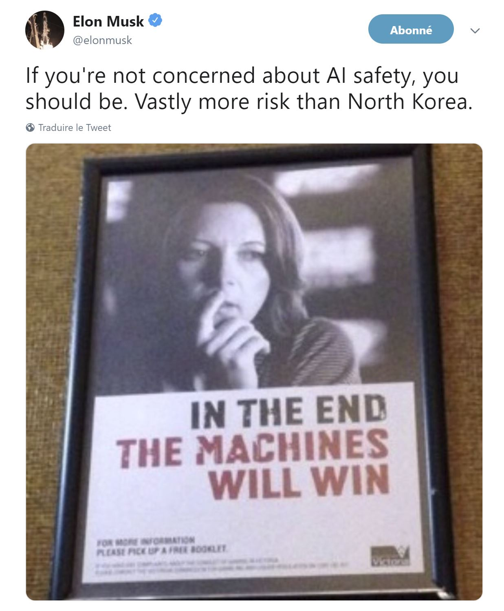

Différents Opinions sur L'IAG
Les différentes classes d'opinions sur l'IAG
Les chercheurs en IA ne sont pas d'accord sur deux principaux points par rapport à l'IAG, le premier : il s'agit du temps qu'il faudra pour développer l'IA générale. Et le deuxième : Et si cela arrive, Serait-elle une bonne chose ou serait-on en danger ?

Digital Utopians
- Larry Page, Mark Zuckerberg
- la vie numérique est la prochaine étape naturelle et souhaitable dans l'évolution
- les esprits numériques doivent être libres plutôt que d'essayer de les arrêter ou de les asservir
- la vie devrait se répandre dans toute notre galaxie et au-delà, elle se répandrait sous la forme d'esprits numériques.
Larry Page : cofondateur du moteur de recherche Google et directeur général de Alphabet inc (Google, youtube…)
Mark Zuckerberg : Fondateur de Facebook, interrogé sur les inquiétudes de Musk au sujet de l'IA, Mark a répondu :

Technos sceptiques
- Andrew Ng
- Le développement d'une IA générale peut prendre plusieurs décennies
- Se soucier de cela peut ralentir son développement : des restrictions et des lois peuvent arrêter le développement de ce genre de technologie.
le responsable scientifique chez Baidu (L’homologue de Google en Chine)

"Fearing a rise of killer robots is like worrying about overpopulation on Mars"
The beneficial-AI movement
- Stuart Russel & Elon Musk
- L’IA générale peut arriver plutôt que l’on pense. En effet, les chercheurs croyait qu'il restait encore une dizaine d'années avant que l'IA arrive à battre les champions du monde au jeu du Go, mais Deepmind, avec AlphaGO a prouvé le contraire,
- Il faut se poser les questions dès maintenant sur l’éthique, l’intérêt d’une IA générale.
Stuart Russel : Professeur d’informatique à Berkeley et chercheur connu en IA
Elon Musk : PDG de SpaceX, Tesla
